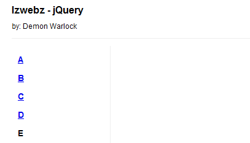
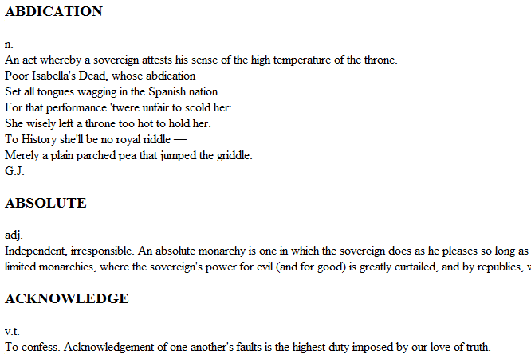
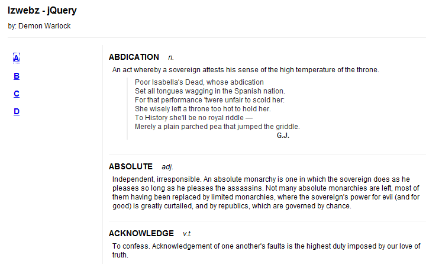

Trong những năm gần đây, người ta hay đánh giá một trang web dựa vào công nghệ mà trang đó đang ứng dụng. Một trong những công nghệ trở nên rất đình đám trong thời gian gần đây là ứng dụng web được gọi là AJAX. Nó là tổng hợp của nhiều công nghệ khác nhau.
AJAX là chữ viết tắt của Asynchronous JavaScript and XML. Những công nghệ có trong một giải pháp AJAX bao gồm
Công nghệ AJAX được ca tụng như là vị cứu tinh của thế giới web, nó biến những trang web tĩnh thành những ứng dụng có tính tương tác cao. Rất nhiều frameworks được tạo ra để giúp các lập trình viên học cách sử dụng nó, chính bởi sự không nhất quán của trình duyệt trong việc ứng dụng đối tượng XMLHttpRequest, jQuery cũng không phải là ngoại lệ. Chúng ta sẽ xem xem AJAX có thực sự kỳ diệu như người ta hay nói không.
Đằng sau ánh hoàng quang, thì AJAX thực sự chỉ là một công cụ dùng để tải dữ liệu từ server về trình duyệt mà không cần phải refresh lại trang web. Những dữ liệu này có nhiều định dạng và chúng ta cũng có nhiều lựa chọn để làm việc với nó khi nó được tải xong.
Chúng ta sẽ xây dựng một trang web hiển thị những từ mới trong cuốn từ điển, các nhóm từ được gom lại dưới một chữ cái như trong từ điển. Mã HTML để định dạng vùng nội dung của trang sẽ như sau:
Yep! Chỉ có vậy thôi. Trang web của chúng ta sẽ không có nội dung nào hết. Chúng ta sẽ sử dụng những phương thức AJAX của jQuery để hiển thị thẻ < div> với cuốn từ điển.
Chúng ta sẽ cần một nơi để kích hoạt quá trình tải dữ liệu, do vậy chúng ta sẽ thêm vào vài đường liên kết để sau này mình có nơi để gán bộ xử lý sự kiện.
Thêm 1 chút CSS ta có 1 trang như sau:
Bây giờ chúng ta tập trung vào phần lấy nội dung cho trang.
Ứng dụng AJAX thường chỉ là những truy vấn để có được những đoạn mã HTML. Kỹ thuật này đôi khi còn được gọi là AHAH (Asynchronous HTTP and HTML), lại quá đơn giản với jQuery. Trước hết chúng ta cần một đoạn mã HTML để chèn, chúng ta sẽ tạo một file mới đặt tên là a.html. File HTML này sẽ có mã như sau:
Đây là hình mà chúng ta sẽ có được, tất nhiên nó nhìn hơi “cùi” vì chưa có định dạng gì hết.
Bạn cũng nên chú ý là file a.html không phải là một tài liệu HTML thực sự, bởi vì nó không có thể < html >, < head > và < body >. Đây là những thẻ bắt buộc phải có cho một tài liệu HTML. Những file như thế này được gọi là mảnh hoặc đoạn mã, mục đích tồn tại của nó chỉ dùng để chèn vào những tài liệu HTML khác, đây chính là việc chúng ta sẽ làm.
Phương thức .load() sẽ làm tất cả những việc còn lại cho chúng ta. Chúng ta chỉ cho nó đường dẫn đến đoạn mã cần chèn bằng cách sử dụng những bộ chọn jQuery thông thường, và sau đó đưa URL của tên file mà chúng ta cần tải dưới dạng tham số của phương thức. Bây giờ nếu bạn nhấp chuột vào đường liên kết đầu tiên, tệp tin đó sẽ được tải và đặt vào trong < div id=’dictionary’>. Trình duyệt sẽ xử lý đoạn mã HTML mới ngay khi nó được chèn vào.
Bạn nhận thấy rằng mã HTML của chúng ta đã tự động có định dạng CSS còn trước đây thì nó không có định dạng gì. Bởi vì ngay sau khi đoạn mã HTML này được chèn vào trang thì nó sẽ chịu ảnh hưởng bởi các luật CSS của trang nó được chèn vào.
Khi bạn thử nhấn một chữ thì định nghĩa của từ đó sẽ xuất hiện gần như ngay lập tức. Đây chính là điểm nhầm lẫn khi bạn làm việc local. Bạn sẽ không thấy được thời gian phải đợi để truyền tải tài liệu trên mạng. Giả sử chúng ta thêm một thông báo khi định nghĩa của từ đã tải xong
Khi bạn nhìn vào đoạn mã jQuery ở trên bạn có thể nghĩ rằng hộp thông báo chỉ xuất hiện sau khi tài liệu đã được tải xong. Những lệnh của JavaScript là đồng bộ, làm xong với tác vụ này mới đến tác vụ khác theo trật tự nghiêm ngặt. Nhưng nếu đoạn mã này được chạy thử trên host thật thì bảng thông báo xuất hiện và biến mất trước khi quá trình tải hoàn thành, đó chính là do sự chậm trễ của mạng. Điều này xảy ra là vì những cuộc gọi của AJAX là không đồng bộ. Nếu không thì ta phải gọi nó là SJAX, nghe đã không thấy phê rồi.